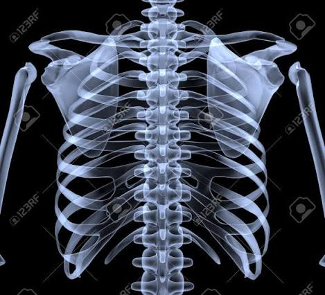

State-of-the-art imaging technology for accurate diagnosis and treatment planning — from a quick X-ray to a detailed MRI.

Filter by scan type, or search by body area.
Your doctor decides, but this is what each one does best.
Tell the technician if you are or might be pregnant, or have an implant, pacemaker or allergy.
Instructions can differ by scan. We confirm them when you book.
Choose the scan, bring your doctor's referral if you have one.
A short questionnaire about pregnancy, implants and allergies.
A technician guides you through it. Most scans take under 45 minutes.
Read by a radiologist and sent to you and your doctor.
CT and MRI usually need one. X-ray and ultrasound can often be booked directly. Ask us when you book.
Ultrasound is safe. Always tell us if you may be pregnant before an X-ray or CT, so we can decide with your doctor.
Yes. You get the report and the images, and we can send them to your doctor.
Not sure which scan you need? Our radiology team can help.
Contact radiology